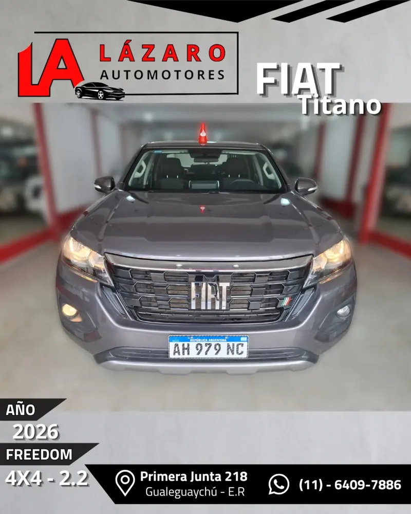
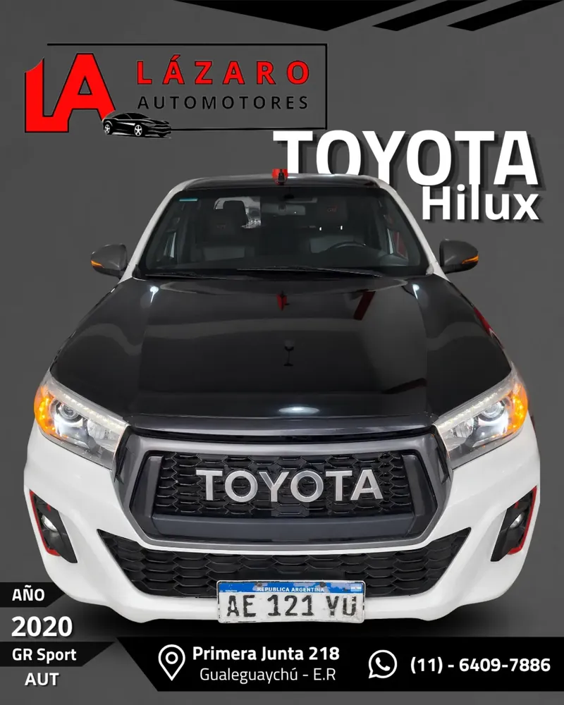
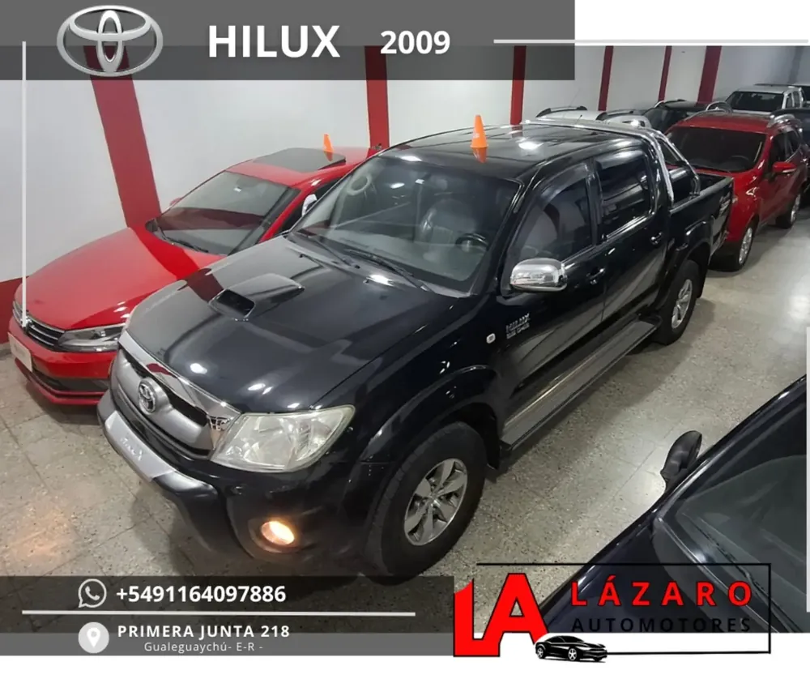
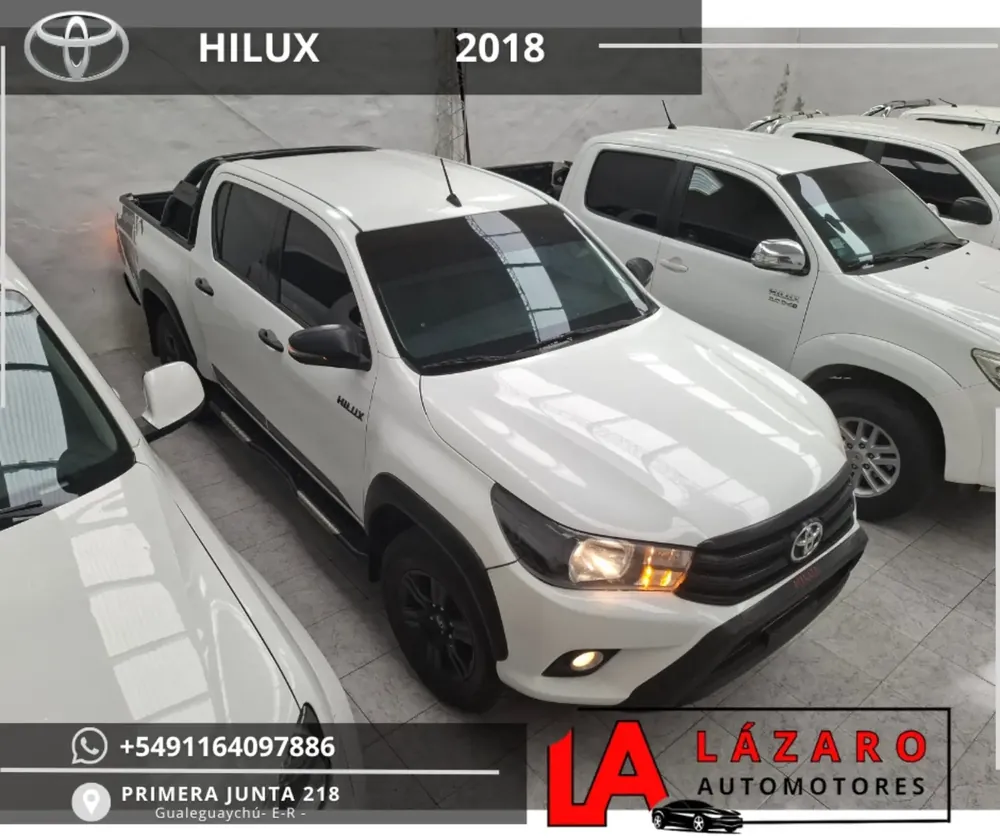
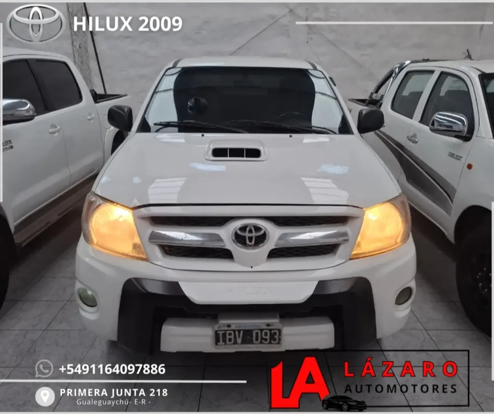
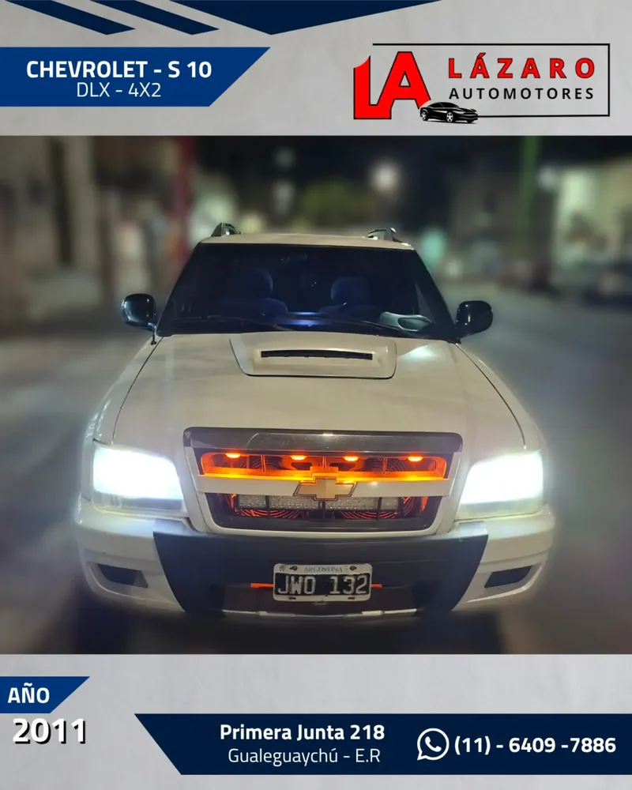
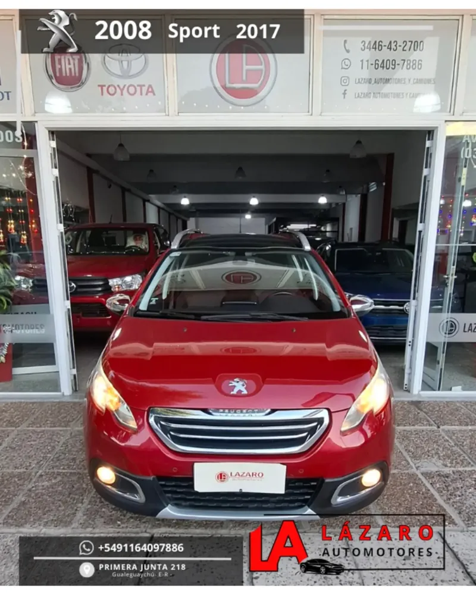
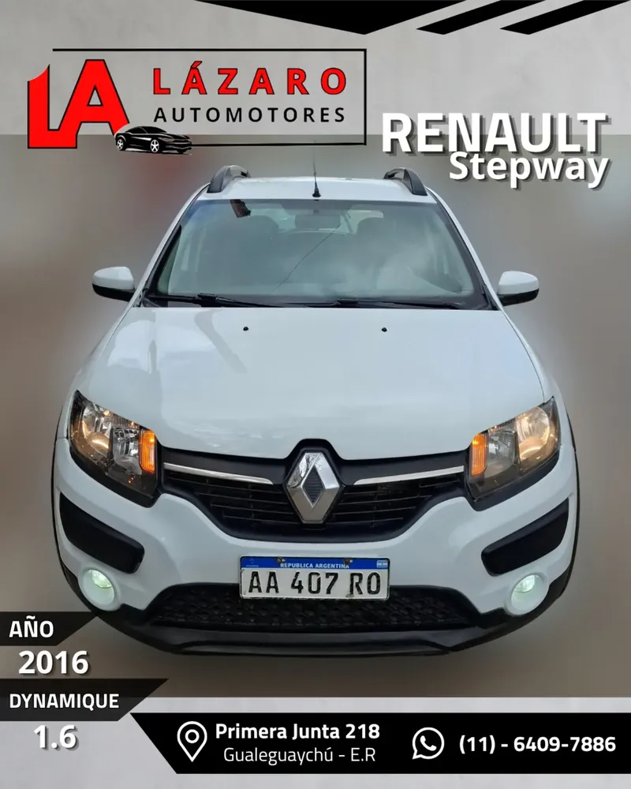
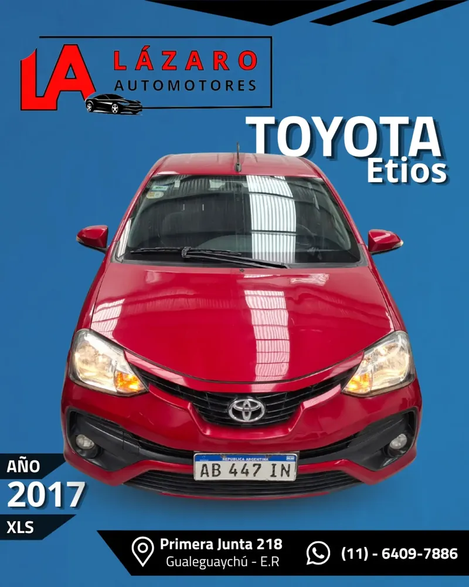
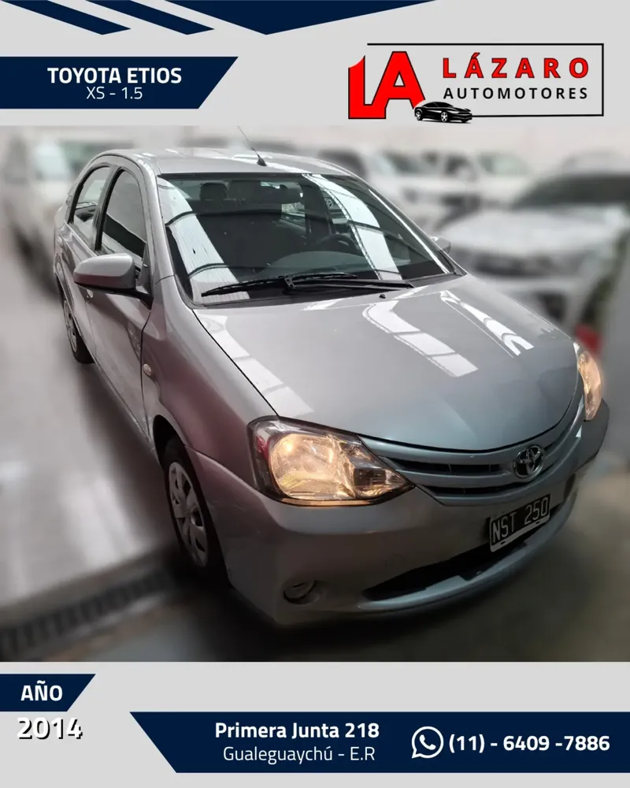

En auto
Avenida Primera Junta 218, Gualeguaychú. Abrí la ruta en tu GPS con los botones de arriba.
Demo ilustrativa · No es el sitio oficial
Concesionario multimarca
Autos, pick-ups, SUVs, camiones y clásicos en Gualeguaychú, Entre Ríos. 46 años de trayectoria y experiencia en el rubro. Consultá por las unidades disponibles o escribinos por WhatsApp.
Horarios y ubicación
Horario de atención
L-V 8:30–12:30 y 17:00–20:30 · S 8:00–12:30
Días y horarios de atención
| Lunes a viernesHoy | 8:30 a 12:3017:00 a 20:30 |
|---|---|
| SábadosHoy | 8:00 a 12:30 |
| DomingosHoy | Cerrado |
Hora de Argentina: ahora son las --:--:--
Mapa de Gualeguaychú
Dónde estamos
Primera Junta 218, Gualeguaychú, Entre Ríos
Horario sujeto a confirmación: consultá con la agencia antes de ir.
46años de trayectoria
Nosotros
Agencia de Gualeguaychú sobre Avenida Primera Junta 218. Autos, pick-ups, SUVs, camiones y clásicos de distintas marcas, de la mano de Lázaro González y Román González.
Catálogo · Gualeguaychú
Pick-ups y autos usados de Lázaro Automotores, con ficha técnica y fotos. Consultá disponibilidad y precio por WhatsApp antes de ir.
Ninguna unidad coincide con los filtros.

2026Año
15.000Kilómetros
$ 49.000.000
Precio publicado el 14/10/2026; puede haber cambiado.
En garantía, 15.000 km «igual a 0 km». Pantalla de 10″ con CarPlay y Android Auto, 6 airbags y cámara de 180° off road.
Reservar esta unidad
2020Año
135.300Kilómetros
$ 52.500.000
Precio publicado el 14/10/2026; puede haber cambiado.
Altísimo nivel de equipamiento.
Reservar esta unidad
2009Año
391.220Kilómetros
$ 29.500.000
Precio publicado el 14/10/2026; puede haber cambiado.
Todos sus services. Climatizador, ABS, barra antivuelcos, cobertor, enganche, estribos y llantas de aleación de 17″.
Reservar esta unidad
2018Año
120.245Kilómetros
$ 43.500.000
Precio publicado el 14/10/2026; puede haber cambiado.
Altísimo equipamiento. Acepta permutas de interés por pick-ups o SUVs.
Reservar esta unidad
2009Año
240.550Kilómetros
$ 28.000.000
Precio publicado el 14/10/2026; puede haber cambiado.
Aire acondicionado, ABS, barra antivuelcos, cobertor, estribos y llantas de aleación de 17″ pintadas de negro.
Reservar esta unidad
2011Año
351.300Kilómetros
$ 17.500.000
Precio publicado el 14/10/2026; puede haber cambiado.
Financiación en 12, 18, 24 o 36 cuotas fijas en pesos con entrega mínima del 50 %. Con cámara de retroceso, enganche y luces LED.
Reservar esta unidad
2017Año
137.690Kilómetros
$ 17.500.000
Precio publicado el 14/10/2026; puede haber cambiado.
Alto y destacado equipamiento.
Reservar esta unidad
2016Año
184.550Kilómetros
$ 14.500.000
Precio publicado el 14/10/2026; puede haber cambiado.
Precio de lista; contado efectivo $ 12.500.000. Segundo juego de llaves y manuales.
Reservar esta unidad
2017Año
80.100Kilómetros
$ 17.500.000
Precio publicado el 14/10/2026; puede haber cambiado.
Único dueño. Pantalla táctil con conectividad, controles de estabilidad y tracción, ISOFIX y volante de cuero.
Reservar esta unidad
2014Año
53.720Kilómetros
$ 15.900.000
Precio publicado el 14/10/2026; puede haber cambiado.
Único dueño. Cuatro neumáticos en muy buen estado, manuales y segundo juego de llaves.
Reservar esta unidadPrecio, kilometraje y disponibilidad pueden haber cambiado: consultalos con la agencia.
Los precios están en pesos. No es el stock de hoy: las unidades pueden estar vendidas y los precios cambiaron o cambian. Se confirman con la agencia.
Formas de pago
Las condiciones se confirman por unidad con la agencia y la aprobación del crédito depende del banco.
Del otro lado del volante
Armá un mensaje con lo que tenés en mente y enviáselo a la agencia por el canal que prefieras.
Es un mensaje que armás vos: no se envía ni se guarda nada desde este sitio. No confirma disponibilidad ni precios; los acuerda la agencia.
Guía
Información general para cualquier compra de un usado, de octubre de 2026. No es una condición ni una promesa de Lázaro Automotores.
Los requisitos y costos de la transferencia cambian: consultalos en el Registro del Automotor o con un gestor o escribano antes de pagar. Fuentes: argentina.gob.ar (transferencia de dominio) y LA NACION (enero de 2026). Información general: no es una condición de Lázaro Automotores.
Preguntas
Respuestas cortas y un glosario del comprador. Información general: no es una condición ni una promesa de Lázaro Automotores.
Autos, pick-ups, SUVs, camiones y clásicos de distintas marcas, usados y 0 km. Qué hay disponible hoy se confirma con la agencia por WhatsApp o teléfono.
Escribinos por WhatsApp o llamanos al 03446 43-2700. Te pasan disponibilidad, precio y formas de pago de la unidad que te interese.
No necesariamente. La disponibilidad y el precio se confirman con la agencia: consultalos antes de ir.
Aceptan permutas de interés y las revisan antes de acordar el valor. Mandá los datos de tu usado por WhatsApp o armalos en «Contanos qué auto buscás».
Según Moovit, pasan cerca las líneas 5A, 5B, 2A, 2B y 4B; la parada más cercana es Bolívar, 1074-1098. Más datos en Cómo llegar.
Sí, camiones y clásicos figuran entre sus rubros. Qué hay disponible hoy se confirma con la agencia: preguntá por lo que tengan.
46 años de trayectoria y experiencia en el rubro, de la mano de Lázaro González y Román González.
En Primera Junta 218, Gualeguaychú, Entre Ríos. Podés abrir la ubicación en la sección Horarios y ubicación.
Los días y franjas, y si estamos abiertos ahora, están en la sección Horarios. Confirmalo con la agencia antes de ir.
Armá la consulta en la sección Visita o escribinos por WhatsApp. No es un turno: el día y la hora se acuerdan con la agencia.
Ofrecen financiación con créditos prendarios en cuotas fijas y aceptan permutas de interés, sujetas a revisión de la unidad. Garantía y transferencia se consultan con la agencia. Las condiciones de cada unidad se confirman con la agencia: dejá por escrito lo que acuerden.
Documento del Registro del Automotor que acredita quién es el titular del vehículo.
Documento que habilita a circular con el vehículo. La del titular es la «cédula verde».
La patente: letras y números que identifican al vehículo.
Certificado del Registro con los datos del titular y las anotaciones del vehículo, por ejemplo prendas o embargos.
Constancia de que no hay deuda de patentes o multas.
Control físico que comprueba que los números de motor y chasis coinciden con los papeles.
Formulario de transferencia que firman las partes cuando cambia el titular.
Préstamo, generalmente bancario, para comprar un vehículo: el propio vehículo queda como garantía hasta que se paga.
Garantía que se inscribe en el Registro del Automotor sobre el vehículo financiado. Mientras exista, el vehículo no se puede transferir sin cancelarla.
Porcentaje del precio que hay que pagar de entrada para acceder a un crédito. La agencia lo informa en cada publicación.
Cuota que no cambia durante todo el plazo del crédito.
Entregar tu usado como parte del precio de otra unidad.
Visita
Pasá a conocer las unidades. Armá la consulta en un minuto y la agencia acuerda con vos el día y la hora.
Cómo llegar
Te esperamos en
Av. Primera Junta 218Gualeguaychú, Entre Ríos
Horario de atención
Avenida Primera Junta 218, Gualeguaychú. Abrí la ruta en tu GPS con los botones de arriba.
Según Moovit, pasan cerca estas líneas. Parada más próxima: Bolívar, 1074-1098.
2820 (CPA E2820DNP).
Transporte público: Moovit. Los recorridos pueden cambiar. ¿Preferís ver el mapa? Está en Horarios y ubicación.
Contacto
Escribinos o llamanos y te contamos disponibilidad y precio de la unidad que te interese.